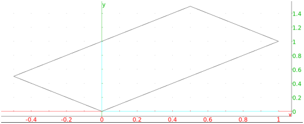
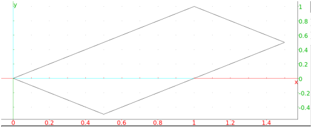
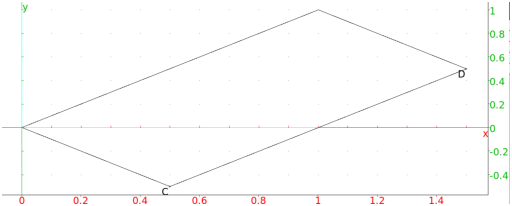
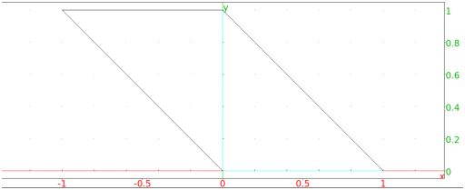

13.9.3 Rectangles in the plane: rectangle
See Section 14.8.3 for rectangles in space.
The rectangle creates rectangles.
-
rectangle takes three mandatory arguments and two
optional arguments:
-
A,B, two points.
- k, a nonzero real number.
- Optionally, varc, vard, two variable names.
- rectangle(A,B,k ⟨varc,vard⟩)
returns and draws the rectangle ABCD, where AD=|k|· AB and the angle from
AB to AD is counterclockwise if k > 0, clockwise if k<0.
If the arguments varc and vard are given, then
C and D will be assigned to them.
Examples
-
Input:
rectangle(0, 1+i, 1/2)
Output:

- Input:
rectangle(0, 1+i, -1/2)
Output:

- Input:
rectangle(0, 1+i, -1/2, C, D)
Output:

Input:
affix(C), affix(D)
Output:
Given rectangle(A,B,k), Xcas computes D by
affix(D) = affix(A) +
kexp(iπ/2)(affix(B)−affix(A)). If
k is complex, then rectangle draws a
parallelogram.
Example
Input:
rectangle(0,1,1+i)
Output:
